## To manage relative paths
library(here)
## Publish data sets, models, and other R objects
library(pins)
library(qs2)
## To transform data that fits in RAM
library(data.table)
library(lubridate)
## To create plots
library(ggplot2)
library(scales)
library(patchwork)
## To sample the data
library(rsample)
## Defining the print params to use in the report
options(datatable.print.nrows = 15, digits = 4)
## Custom functions
devtools::load_all()
# Defining the pin boards to use
BoardLocal <- board_folder(here("../NycTaxiPins/Board"))
# Loading params
Params <- yaml::read_yaml(here("params.yml"))
Params$BoroughColors <- unlist(Params$BoroughColors)Initial Exploration
After completing the business understanding phase, we are ready to perform the data understanding phase by performing an EDA with the following steps:
- Exploring the individual distribution of variables.
- Exploring correlations between predictors and the target variable.
- Exploring correlations between predictors.
This will help to:
- Ensure data quality.
- Identify key predictors.
- Guide model choice and feature engineering.
Setting up the environment
Loading packages
Importing training sample
SampledData <-
pin_list(BoardLocal) |>
grep(pattern = "^OneMonthData", value = TRUE) |>
sort() |>
head(12L) |>
lapply(FUN = pin_read,
board = BoardLocal) |>
rbindlist()
set.seed(2545)
SampledDataSplit <- initial_split(SampledData)
TrainingSample <- training(SampledDataSplit)Importing geospatial information
ZoneCodesRef <- pin_read(BoardLocal, "ZoneCodesRef")Adding features for exploration
TrainingSample[,`:=`(company = fcase(hvfhs_license_num == "HV0002", "Juno",
hvfhs_license_num == "HV0003", "Uber",
hvfhs_license_num == "HV0004", "Via",
hvfhs_license_num == "HV0005", "Lyft"),
take_current_trip = factor(fifelse(take_current_trip == 1, "Y", "N"), levels = c("Y", "N")),
weekday = wday(request_datetime, label = TRUE, abbr = FALSE, week_start = 1),
month = month(request_datetime, label = TRUE, abbr = FALSE),
hour = hour(request_datetime),
trip_time_min = trip_time / 60,
trip_value = tips + driver_pay,
PULocationID = as.character(PULocationID),
DOLocationID = as.character(DOLocationID))]
#> Warning in `[.data.table`(TrainingSample, , `:=`(company =
#> fcase(hvfhs_license_num == : A shallow copy of this data.table was taken so
#> that := can add or remove 6 columns by reference. At an earlier point, this
#> data.table was copied by R (or was created manually using structure() or
#> similar). Avoid names<- and attr<- which in R currently (and oddly) may copy
#> the whole data.table. Use set* syntax instead to avoid copying: ?set, ?setnames
#> and ?setattr. It's also not unusual for data.table-agnostic packages to produce
#> tables affected by this issue. If this message doesn't help, please report your
#> use case to the data.table issue tracker so the root cause can be fixed or this
#> message improved.
# To explore the distribution provided by the `PULocationID` (Pick Up Zone ID)
# and `DOLocationID` (Drop Off Zone ID), we need to add extra information.
# If we check the taxi zone look up table, we can find the `Borough` and
# `service_zone` of each table.
TrainingSample[ZoneCodesRef,
on = c("PULocationID" = "LocationID"),
`:=`(PULocationID = as.character(PULocationID),
PUBorough = Borough,
PUServiceZone = service_zone)]
TrainingSample[ZoneCodesRef,
on = c("DOLocationID" = "LocationID"),
`:=`(DOLocationID = as.character(DOLocationID),
DOBorough = Borough,
DOServiceZone = service_zone)]Exploring individual distributions
Categorical variables
Based on
take_current_triponly 24% of the trips need to be rejected.In
company, Uber accounts for 72% of trips. In consequence, the results of this project will be more related to Uber than any other company.dispatching_base_num,originating_base_num, andaccess_a_ride_flagall seem to be highly correlated with the company and are unlikely to be useful for prediction.Based on
shared_request_flagandshared_match_flag99% of trips don’t request to share the trip and don’t end sharing the the trip.Based on
wav_request_flagandwav_match_flag94% of trips don’t request and don’t take place in wheelchair-accessible vehicles.
Show the code
TrainingSample[, .N,
by = "take_current_trip"
][,`:=`(prop = N / sum(N),
take_current_trip = reorder(take_current_trip, N))] |>
ggplot(aes(N, take_current_trip)) +
geom_col(fill = Params$ColorGray,
color = "black",
width = 0.5) +
geom_text(aes(label = percent(prop, accuracy = 1)),
nudge_x = 10000) +
scale_x_continuous(labels = comma_format()) +
labs(title = "Only 24% of the trips need to be rejected",
x = "") +
theme_minimal() +
theme(panel.grid.major.y = element_blank(),
panel.grid.minor.x = element_blank(),
plot.title = element_text(face = "bold", size = 15))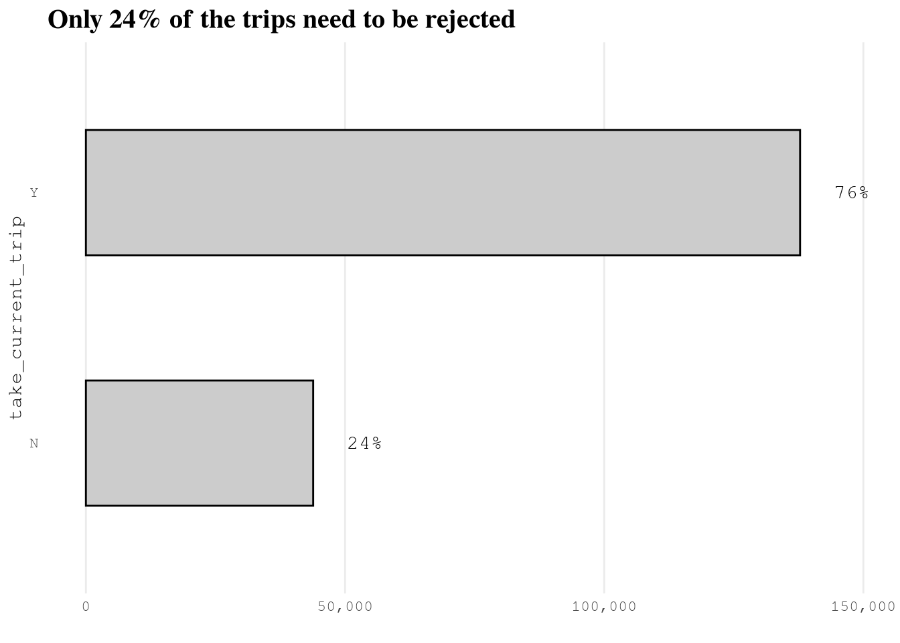
Show the code
TrainingSample[, .N,
by = "company"
][, prop := N / sum(N)] |>
ggplot(aes(N, company)) +
geom_col(fill = Params$ColorGray,
color = "black",
width = 0.5) +
geom_text(aes(label = percent(prop)),
nudge_x = 6500) +
scale_x_continuous(labels = comma_format()) +
labs(title = "Most of the trips come from Uber",
x = "",
y = "Company Name") +
theme_minimal() +
theme(panel.grid.major.y = element_blank(),
plot.title = element_text(face = "bold", size = 15))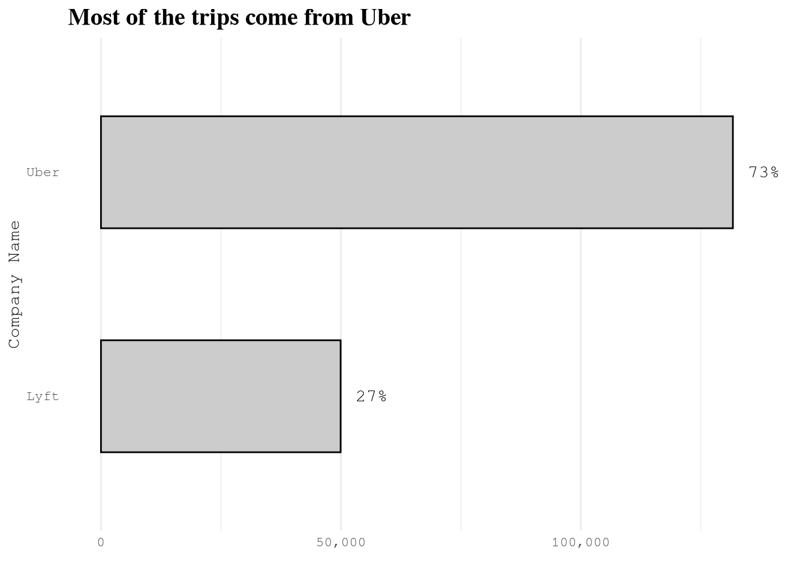
Show the code
Plot_dispatching_base_num <-
plot_heap_map(TrainingSample,
cat_vars = c("company", "dispatching_base_num"),
color_high = Params$ColorHighlight,
color_low = Params$ColorGray)
Plot_originating_base_num <-
plot_heap_map(TrainingSample,
cat_vars = c("company", "originating_base_num"),
color_high = Params$ColorHighlight,
color_low = Params$ColorGray)
Plot_access_a_ride_flag <-
plot_heap_map(TrainingSample,
cat_vars = c("company", "access_a_ride_flag"),
color_high = Params$ColorHighlight,
color_low = Params$ColorGray,
sep = "\n")
Plot_access_a_ride_flag 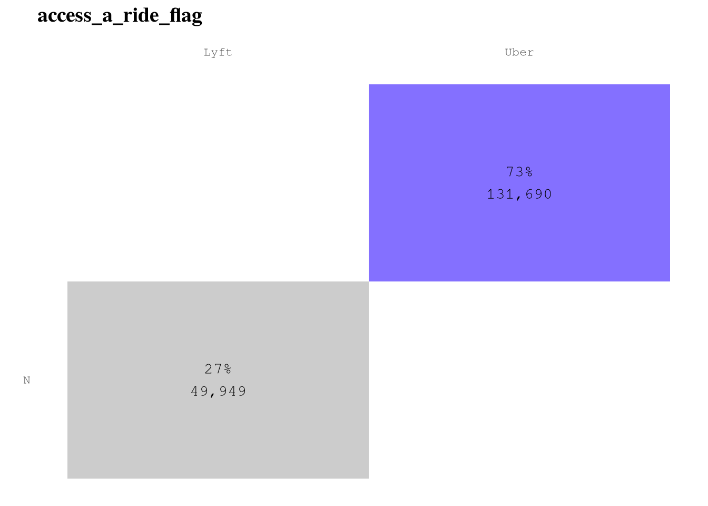
Show the code
(Plot_dispatching_base_num + Plot_originating_base_num)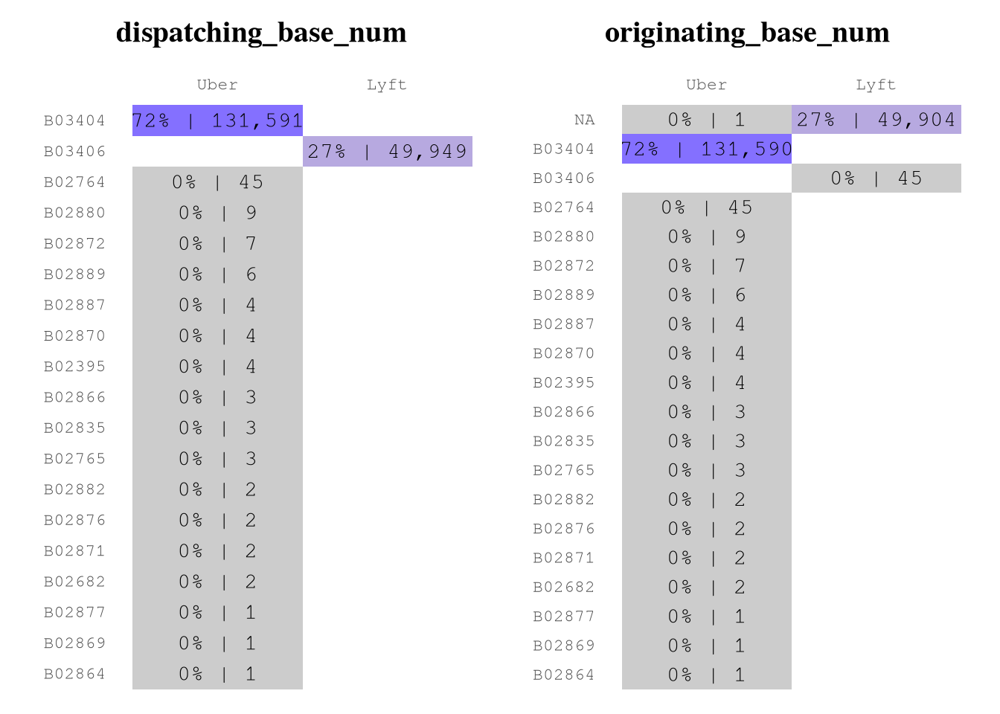
Show the code
plot_heap_map(TrainingSample,
cat_vars = c("shared_request_flag", "shared_match_flag"),
color_high = Params$ColorHighlight,
color_low = Params$ColorGray,
sep = "\n") +
labs(title = "",
x = "shared_request_flag",
y = "shared_match_flag")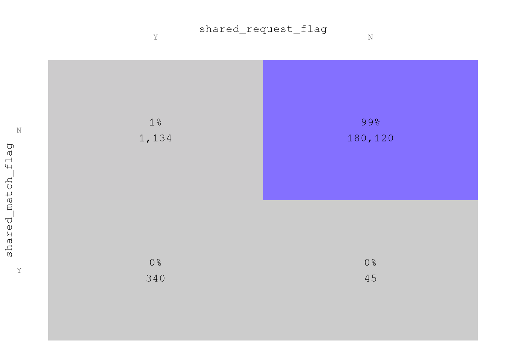
Show the code
plot_heap_map(TrainingSample,
cat_vars = c("wav_request_flag", "wav_match_flag"),
color_high = Params$ColorHighlight,
color_low = Params$ColorGray,
sep = "\n") +
labs(title = "",
x = "wav_request_flag",
y = "wav_match_flag")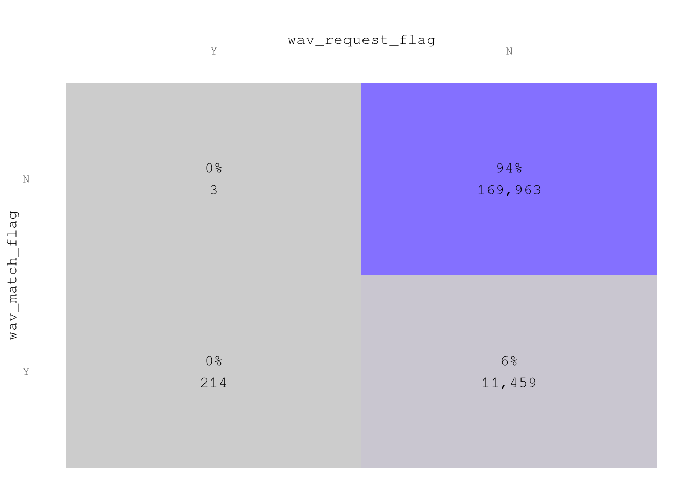
Datetime variables
Based on the reports, we can confirm that we have a good number of example from each month, weekday and hour. The only exception is December from which only have 2,361 of the total sample of 181,639.
Show the code
plot_bar(TrainingSample,
"month",
color_highlight = Params$ColorHighlight,
color_gray = Params$ColorGray)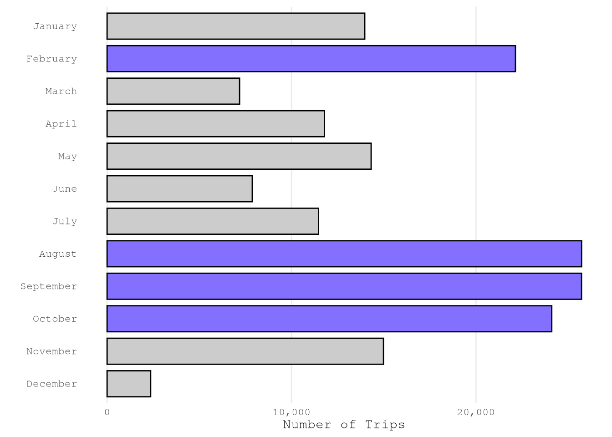
Show the code
plot_bar(TrainingSample,
"weekday",
color_highlight = Params$ColorHighlight,
color_gray = Params$ColorGray,
n_top = 1L)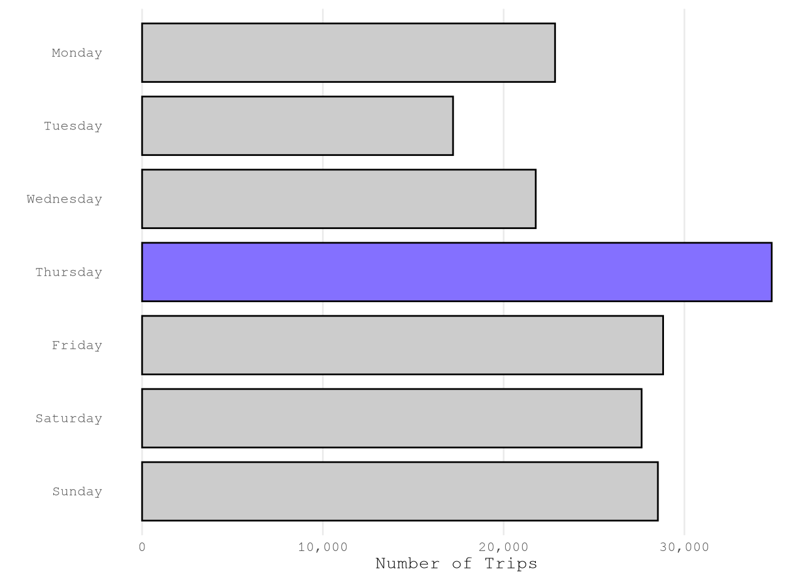
Show the code
plot_bar(TrainingSample,
"hour",
color_highlight = Params$ColorHighlight,
color_gray = Params$ColorGray)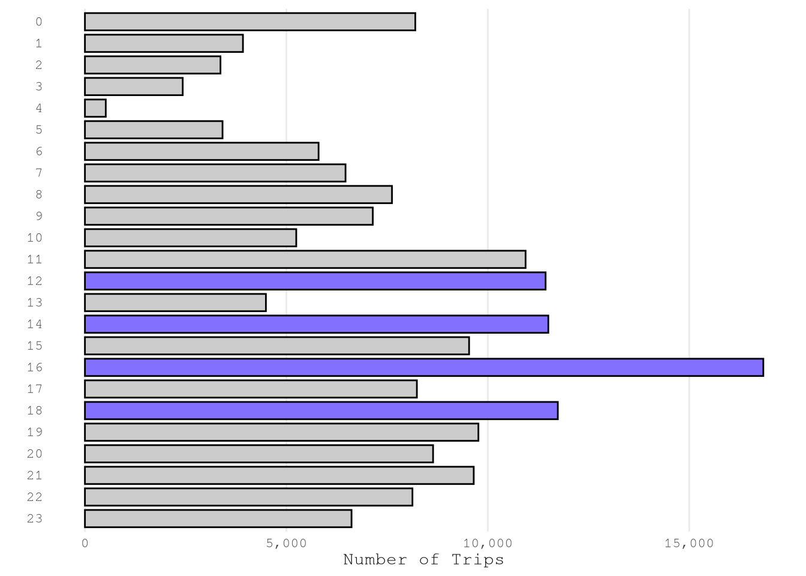
Geospatial data
Based on the next results, we can conclude that:
Based on the
borough, must of the trips start and end in Manhattan.service_zoneis correlated with theboroughand don’t provide much difference information.We have examples for all
LocationID, but the number of examples for each zone change a lot from zone to zone, as expected.
Show the code
PlotPUBorough <-
plot_bar(TrainingSample,
var_name = "PUBorough",
n_top = 1L) +
labs(title = "PUBorough")
PlotDOBorough <-
plot_bar(TrainingSample,
var_name = "DOBorough",
n_top = 1L) +
labs(title = "DOBorough")
PlotPUBorough / PlotDOBorough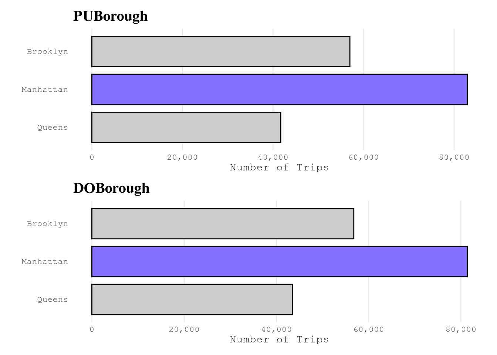
Show the code
PlotPUServiceZone <-
plot_heap_map(TrainingSample,
cat_vars = c("PUBorough", "PUServiceZone"),
sep = "\n") +
labs(title = "PUBorough vs PUServiceZone")
PlotDOServiceZone <-
plot_heap_map(TrainingSample,
cat_vars = c("DOBorough", "DOServiceZone"),
sep = "\n") +
labs(title = "DOBorough vs DOServiceZone")
PlotPUServiceZone / PlotDOServiceZone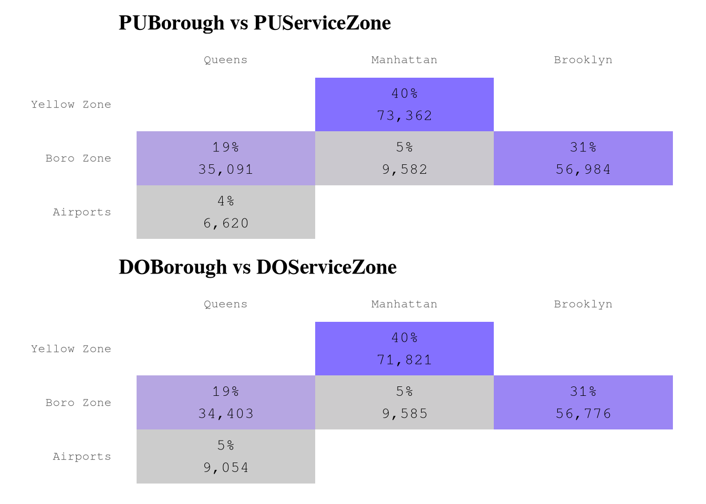
Show the code
LocationIdTextSize <- 7
setkeyv(TrainingSample, "PUBorough")
PlotPuLocations1 <-
plot_bar(TrainingSample["Manhattan"],
var_name = "PULocationID") +
labs(subtitle = "Manhattan") +
theme(axis.text.y = element_text(size = LocationIdTextSize))
PlotPuLocations2 <-
plot_bar(TrainingSample["Brooklyn"],
var_name = "PULocationID") +
labs(subtitle = "Brooklyn")+
theme(axis.text.y = element_text(size = LocationIdTextSize))
PlotPuLocations3 <-
plot_bar(TrainingSample["Queens"],
var_name = "PULocationID") +
labs(subtitle = "Queens")+
theme(axis.text.y = element_text(size = LocationIdTextSize))
PlotPuLocations1 / PlotPuLocations2 / PlotPuLocations3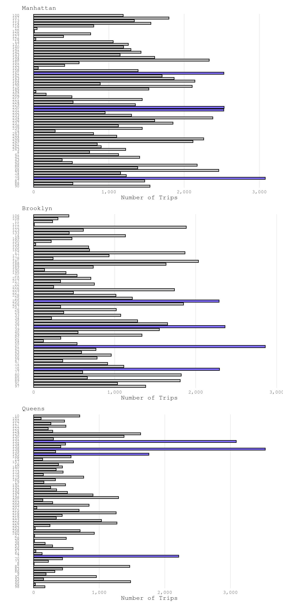
Show the code
setkeyv(TrainingSample, "DOBorough")
PlotDoLocations1 <-
plot_bar(TrainingSample["Manhattan"],
var_name = "DOLocationID") +
labs(subtitle = "Manhattan") +
theme(axis.text.y = element_text(size = LocationIdTextSize))
PlotDoLocations2 <-
plot_bar(TrainingSample["Brooklyn"],
var_name = "DOLocationID") +
labs(subtitle = "Brooklyn")+
theme(axis.text.y = element_text(size = LocationIdTextSize))
PlotDoLocations3 <-
plot_bar(TrainingSample["Queens"],
var_name = "DOLocationID") +
labs(subtitle = "Queens")+
theme(axis.text.y = element_text(size = LocationIdTextSize))
PlotDoLocations1 / PlotDoLocations2 / PlotDoLocations3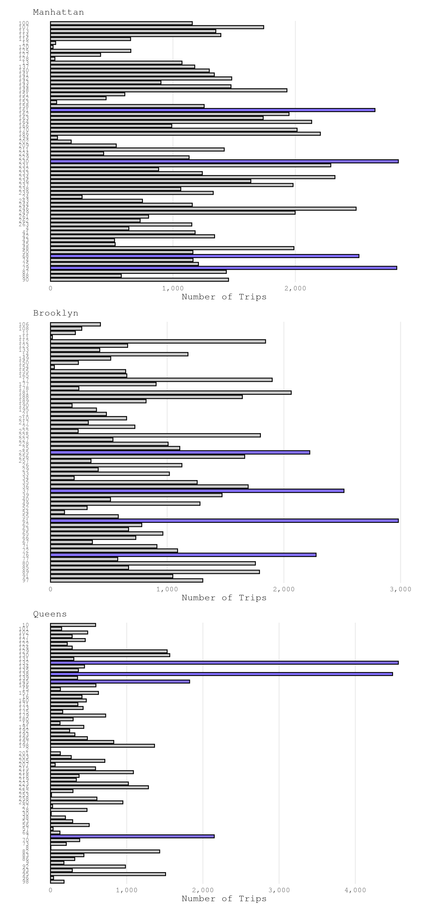
Numerical variables
Based on the below graphs, we can say that:
trip_milesis right skewed with very few trips close to 100 miles, so logarithmic transformation of based 2 makes easier to see that 75% of trips take from 1 to 8 miles and based on the ECDF plot we can also see that really few trips take more than 24 miles, but 10% takes less than 1 mile.trip_time_minis right skewed with very few trips close to 400 min, so logarithmic transformation of based 2 makes easier to see that 89% of trips take from 2 to 35 min and based on the ECDF plot we can also see that really few trips take more than 70 min or less than 2 min.tipsis strongly right-skewed, as approximately 79% of trips recorded no tip. Among the remaining 21% of trips, about 10% have tips in the range(0, 4]dollars and approximately 9% fall within(4, 10]dollars. It is uncommon to observe trips with tips exceeding 10 dollars, and trips with tips greater than 20 dollars are exceedingly rare.driver_payis right skewed as only 6% of trips of the trips present pays higher than $40.performance_per_hourpresent some over inflated values of around 30K dollars per hour, which make no sense based on what we saw in when defining the based line to improve of 50 dollars per hour. After applying a logarithmic scale of base 2, we can see the real distribution, we can find that some of the trips have a negative performance, but thanks to the ECDF Plot we know that only 5% of the points present less than 40 dollars per hour, 7% of the trips present values greater than 100 dollars per hour and only 1% of the example present a performance grater than 160 dollars per hour.performance_per_hourafter removing trips with less 2 min, we can see a huge difference. Now the max performance it’s around 900 dollars per hour but the general distribution was not affected.
Show the code
plot_num_distribution(TrainingSample,
trip_miles,
title = "trip_miles",
hist_binwidth = 5,
hist_n_break = 12,
log_binwidth = 0.5,
curve_important_points = c(1, 8, 24),
curve_limits = c(0, 25),
curve_nudge_y = 0.08,
curve_breaks_x = breaks_width(3))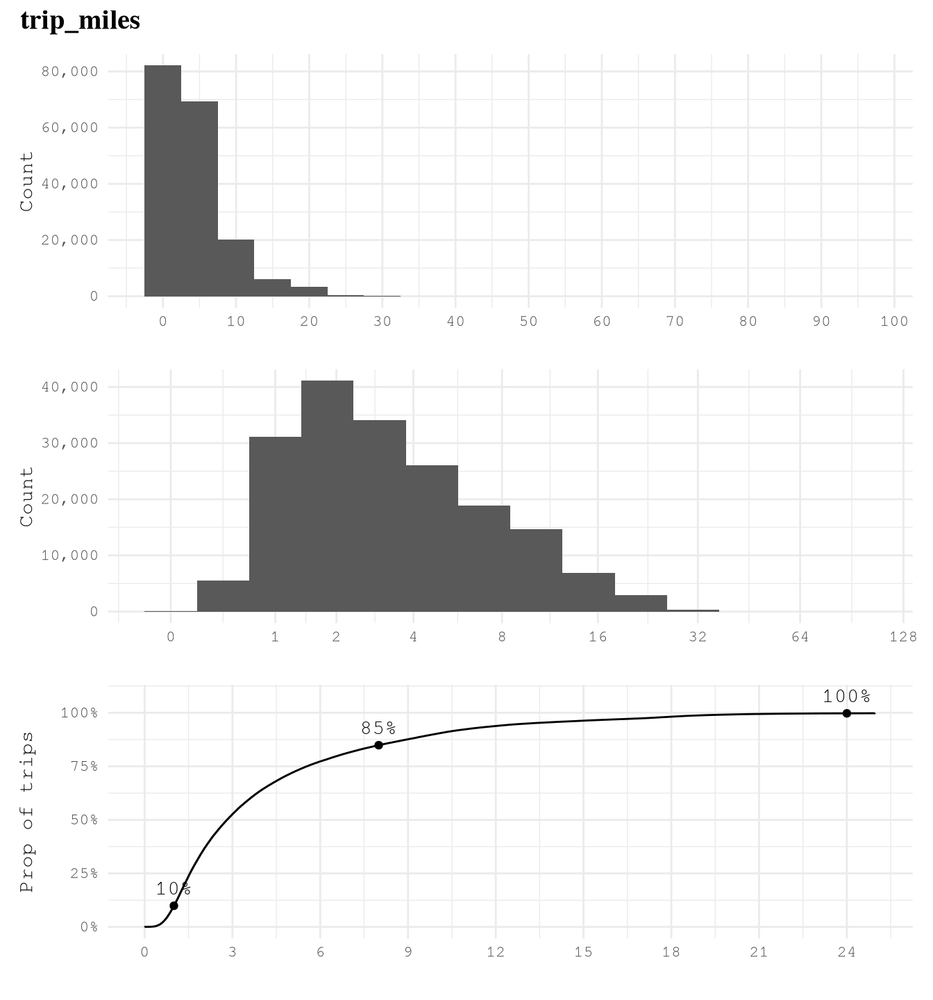
Show the code
plot_num_distribution(TrainingSample,
trip_time_min,
title = "trip_time_min",
hist_binwidth = 5,
hist_n_break = 12,
log_binwidth = 0.5,
curve_important_points = c(2, 35, 70),
curve_nudge_y = 0.1,
curve_breaks_x = scales::breaks_width(10),
curve_limits = c(0, 90))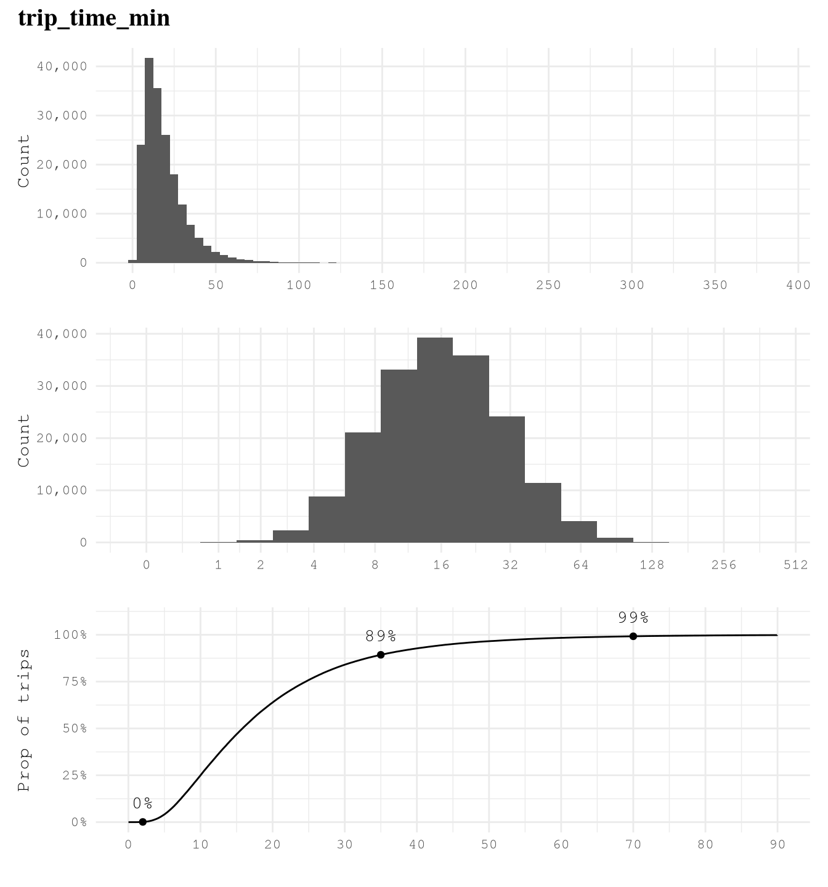
Show the code
plot_num_distribution(TrainingSample,
tips,
title = "tips",
hist_n_break = 12,
hist_binwidth = 2,
log_binwidth = 0.2,
curve_important_points = c(0, 4, 10, 20),
curve_nudge_y = 0.02,
curve_breaks_x = scales::breaks_width(2),
curve_limits = c(0, 20))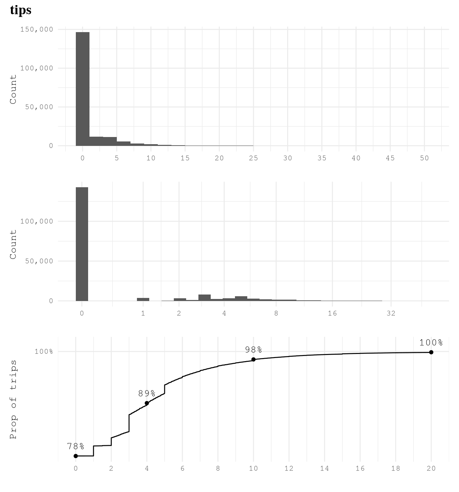
Show the code
plot_num_distribution(TrainingSample,
driver_pay,
title = "driver_pay",
hist_n_break = 12,
hist_binwidth = 10,
log_binwidth = 0.2,
curve_important_points = c(7, 40, 80),
curve_nudge_y = 0.1,
curve_breaks_x = scales::breaks_width(10),
curve_limits = c(-50, 100))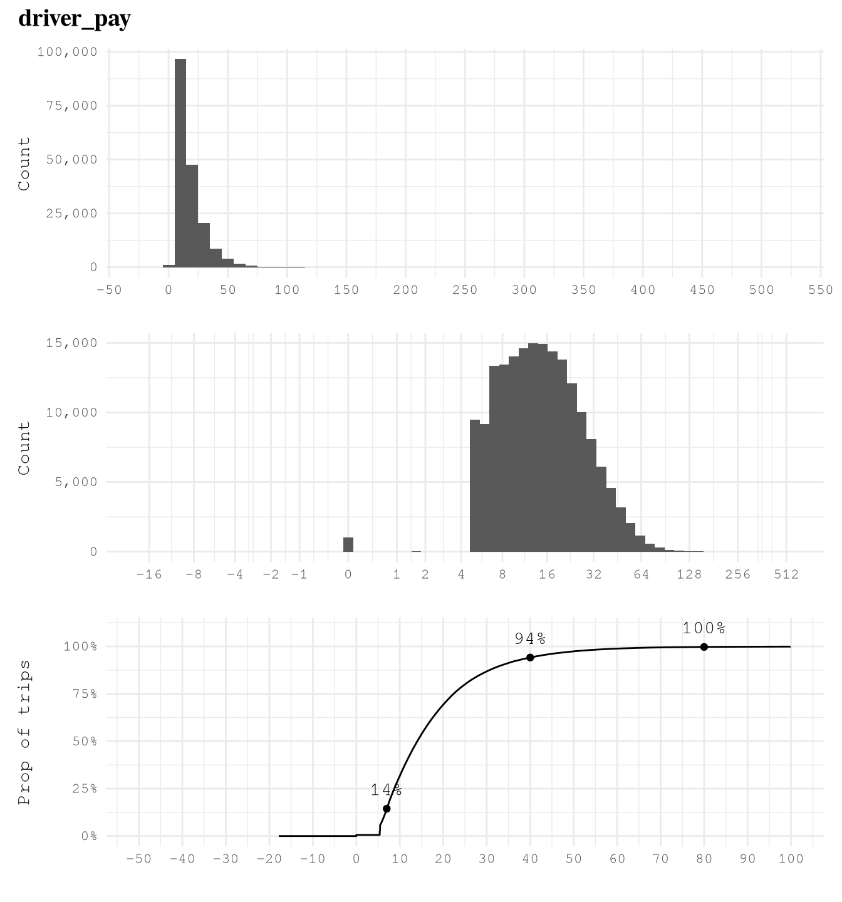
Show the code
plot_num_distribution(TrainingSample,
performance_per_hour,
title = "performance_per_hour",
hist_n_break = 12,
hist_binwidth = 10,
log_binwidth = 0.2,
log_breaks = c(-2^(0:10), 0, 2^(0:20)),
curve_important_points = c(0,40, 70, 100, 160),
curve_nudge_y = 0.1,
curve_breaks_x = scales::breaks_width(10),
curve_limits = c(-30, 200))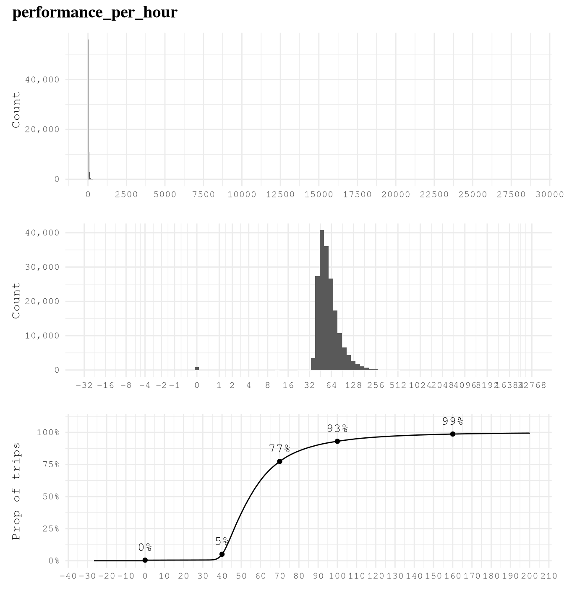
Show the code
plot_num_distribution(TrainingSample[trip_time_min >= 2],
performance_per_hour,
title = "performance_per_hour",
hist_n_break = 12,
hist_binwidth = 10,
log_binwidth = 0.2,
log_breaks = c(-2^(0:10), 0, 2^(0:20)),
curve_important_points = c(0,40, 70, 100, 160),
curve_nudge_y = 0.1,
curve_breaks_x = scales::breaks_width(10),
curve_limits = c(-30, 200))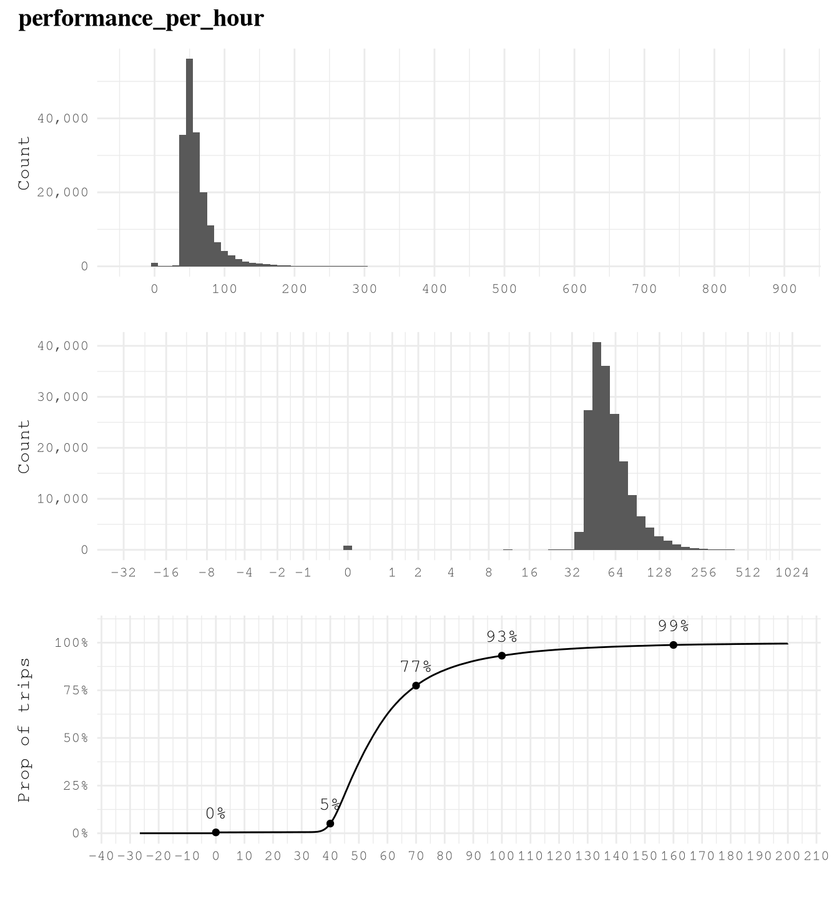
Predictors vs take_current_trip
After exploring the distribution of the individual variables we know that we are going to train our model based on trips with more than 2 minutes of trip, so we are going to exclude those cases for this analysis.
For categorical variables we only need to focus on variables with at least 2 levels that present more than 1% of the trips.
dispatching_base_num,originating_base_num, andaccess_a_ride_flagwere not included as represent the same information that thecompany.PULocationIDandDOLocationIDpresent a strong variation.wav_match_flagpresent a moderate variation.companypresent a moderate variation.weekdaypresent low variation.monthpresent a moderate variation.hourpresent a strong variation.PUBoroughpresent a strong variation.PUServiceZonepresent a strong variation.DOBoroughpresent a strong variation.DOServiceZonepresent a strong variation.
For numerical variables:
trip_milesalone is not highly effective in predicting whether a trip will be taken as but classes present overlapping distributions and similar cumulative distributions, which make it a low predictor.trip_time_minalone is not highly effective in predicting whether a trip will be taken as both classes present overlapping distributions and similar cumulative distributions, which make it a low predictor.
Show the code
TrainingSampleValidCat <-
TrainingSample[trip_time_min >= 2,
c(.SD, list("trip_id" = trip_id)) |> lapply(as.character),
.SDcols = \(x) is.character(x) | is.factor(x) | is.integer(x)
][, melt(.SD,
id.vars = c("trip_id", "take_current_trip")),
.SDcols = !c("hvfhs_license_num",
"dispatching_base_num",
"originating_base_num",
"access_a_ride_flag")
][, value_count := .N,
by = c("variable", "value")
][, value_prop := value_count / .N,
by = "variable"
][value_prop >= 0.01
][, n_unique_values := uniqueN(value),
by = "variable"
][n_unique_values > 1L]
ggplot(TrainingSampleValidCat,
aes(value, fill = factor(take_current_trip, levels = c("Y", "N")))) +
geom_bar(width = 0.7,
position = "fill") +
scale_fill_manual(values = c("N" = Params$ColorHighlight ,"Y" = Params$ColorGray))+
scale_y_continuous(labels = percent_format(accuracy = 1)) +
facet_wrap(vars(variable),
scale = "free",
ncol = 3) +
coord_flip()+
labs(y = "Prop of trips",
fill = "take_current_trip") +
theme_minimal() +
theme(legend.position = "top",
panel.grid = element_blank())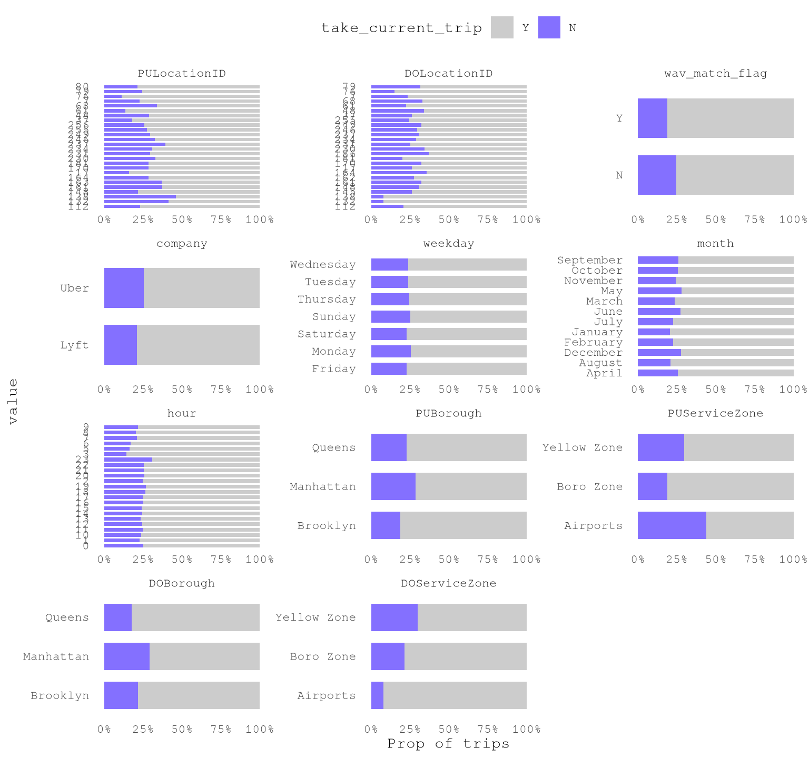
Show the code
plot_num_distribution(TrainingSample[trip_time_min >= 2],
trip_miles,
title = "trip_miles",
take_current_trip,
manual_fill_values = c("N" = Params$ColorHighlight, "Y" = Params$ColorGray),
hist_binwidth = 5,
hist_n_break = 12,
log_binwidth = 0.5,
curve_limits = c(0, 25),
curve_breaks_x = breaks_width(3))
#> Warning: Removed 377 rows containing non-finite outside the scale range
#> (`stat_ecdf()`).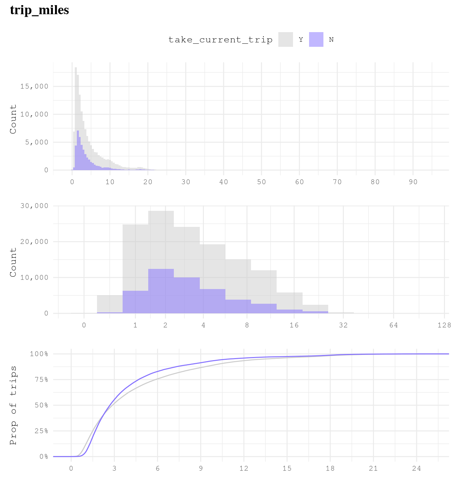
Show the code
plot_num_distribution(TrainingSample[trip_time_min >= 2],
trip_time_min,
take_current_trip,
manual_fill_values = c("N" = Params$ColorHighlight, "Y" = Params$ColorGray),
title = "trip_time_min",
hist_binwidth = 5,
hist_n_break = 12,
log_binwidth = 0.5,
curve_breaks_x = scales::breaks_width(10),
curve_limits = c(0, 90))
#> Warning: Removed 337 rows containing non-finite outside the scale range
#> (`stat_ecdf()`).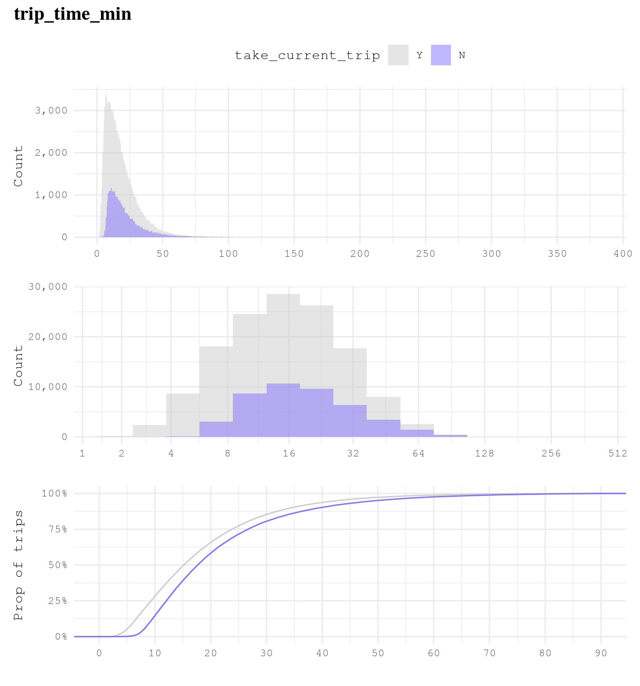
Exploring correlations between predictors
There is not a surprise that trip_time_min and trip_miles present a 79% of correlation.
But on the other hand, by checking the Cramer’s V correlation between categorical predictors we can see that there is low correlation between predictors, with the exception of features linked to locations.
Show the code
TrainingSample[trip_time_min >= 2,
.SD,
.SDcols = levels(TrainingSampleValidCat$variable)] |>
corrcat::cramerV_df(unique = FALSE)|>
ggplot(aes(V1, V2, fill = `Cramer.V`))+
geom_tile()+
scale_fill_gradient(low = "white",
high = Params$ColorHighlight,
space = "Lab",
na.value = "white") +
geom_text(aes(label = percent(`Cramer.V`, accuracy = 1)),
size = 2.5) +
labs(title = "Cramer's V correlation")+
theme_minimal()+
theme(legend.position = "none",
panel.grid = element_blank(),
axis.text.x = element_text(angle = 90),
axis.title = element_blank())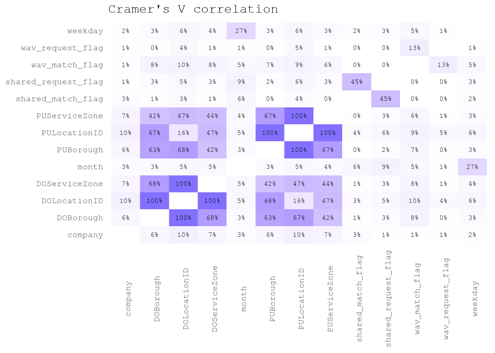